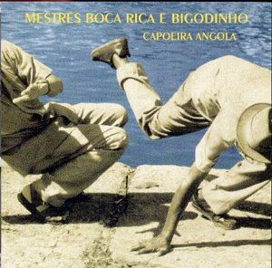
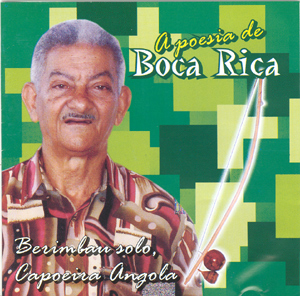
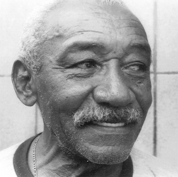

Лучший музыкальный альбом: Mestres Boca Rica e Bigodinho — Capoeira Angola
Представляю вашему вниманию победителя конкурса на звание лучшего альбома в жанре Capoeira Angola (по мнению пользователей Capoeira.in) — Mestres Boca Rica e Bigodinho — Capoeira Angola. Под катом информация об альбоме, биографии исполнителей, трек-лист и ссылка на альбом с текстами песен.

Данный альбом является частью проекта, выпущенного Ассоциацией Капоэйры Ангола (Associoação de capoeira Angola) местре Marrom и его учениками в Рио. Целью проекта была запись традиционных ритмов и песен капоэйры Ангола. Среди основных работ можно назвать: «Сapoeira Angola Marrom e Alunos», „Tradições Populares — Infantil“, «Mestres Felipe de Santo Amaro e Cláudio Angoleiro de Feira de Santana» и данный альбом «Mestres Boca Rica e Bigodinho».
Исполнители: Mestre Boca Rica, Mestre Bigodinho
Название альбома: Capoeira Angola
Год выпуска: 2002
- Bahia De Todos Os Santos
- Riachão
- Ola-Ê-La-Ê-Lá
- Quantas Melodias / A Bananeira Caiu
- Na Beira Do Mar
- Praia Da Preguiça
- Não Bata Na Criança
- Madeira De Maçaranduba
- Beira-Mar
- Ave Maria, Meu Deus
- Vatapá Com Caruru
- Angola Ê Ê
- Vá Na Piedade Amanhã
- Mestre Bigodinho (skit)
- Eu Vi O Sol, Vi A Lua Clarear
- Nunca Vi Tanta Areia No Mar
- A Canoa Virou Marinheiro
- Marinheiro Só
- Pau Pereira
- Pé De Lima, Pé De Limão
- Que É Que Tem Nego? (Maribondo, Sinhá)
- Bem-Te-Vi Jogou
- Tabaréu Que Vem Do Sertão
- Aidê / Apanha A Laranja / Santa Bárbara
- Adeus, Adeus (Boa Viagem)
- Ô João Chofer (samba)
- Alô Bahia (samba)
- Sai, Sai, Sai Ô Piranha / Boi Maia (samba)
- Já Tô Véio / Não Vou Em Santo Amaro (samba)
- Se Eu Tivesse Dinheiro / Ai Meus Amô (samba)
- Saco De Areia (samba)
- Tá Com Raiva De Mim (samba)
- Ói Ela De Manhã (samba)
- Se Nós Dois Morasse Junto (samba)
- Pai É Pai, Mãe É Mãe (samba)
- Que Luz É Aquela? (samba)
- Eu Sou De Minas Gerais (samba)
- Amanheça O Dia (samba)
Примечание к изданию: В этом релизе я вложил тексты почти всех песен, которые смог найти. Также правильно раставлены ID3 теги и прикреплена обложка.
Скачать (альбом, обложка, тексты песен) [пароль: www.capoeira.in]
Биография Mestre Boca Rica
Мануэл Силва (Manoel Silva) родом из Maragogipe (штат Bahia, Бразилия), родившийся 26 ноября 1938 года — Mestre Boca Rica, ученик местре Паштиньи – живая легенда Капоэйры. Более 40 лет своей жизни посвятил капоэйре, один из немногих капоэйристов продолжающих играть в столь почтенном возрасте. Своё прозвище получил от местре Паштиньи за свои передние золотые зубы (в 60-е гг. это указывало на высокий статус их обладателя).
Местре уделяет очень много внимания музыке в капоэйре и батерии, и всегда пытался на это же устремлять своих учеников, а также людей, задававших вопросы об этом. Многими людьми местре характеризуется как „Хороший Человек“, умеющий разговаривать с людьми и выражать свои знания и точку зрения, без конфронтации с теми, чьи взгляды отличались бы от его мнения.
Местре — певец и музыкант, вызывающий эмоции у всех слушателей своим пением, по свидетельствам многих людей, его душевно спетые ладаиньи заставляют слезы выступать на лицах; он сделал капоэйру центром своей жизни, много путешествует по миру, чтобы учить и играть капоэйру.
Сегодня, он является одним из A. B. C.A. (Бразильская Ассоциация Капоэйры Ангола), и пытается донести до тех, кто внимательно слушает и до своих учеников, что капоэйра теряет свою подлинность и самобытность. Его огорчает наличие огромного числа людей, думающих что они занимаются капоэйрой Режионал, даже не зная откуда взялось это название, не умеющих мало-мальски играть на инструментах и не знающих ритмов капоэйры .
Местре Бока Рика одно время часто посещал академию местре Бимбы, изучая ритмы и правила, которые Бимба привнёс в капоэйру.
В настоящее время он уже почти не путешествует, а живет в Сальвадоре и проводит занятия в своей академии в Largo do Tanque, куда переехал с группой после многолетних занятий в знаменитейшем Forte de Santo Antonio.
Вместе с местре Bigodinho записал великолепный музыкальный диск в 2002 году «Mestres Boca Rica e Bigodinho — Capoeira Angola», а также выпустил сольный диск «A poesia de Boca Rica»
Истончик / Оригинал (порт.)
Биография Mestre Bigodinho
Рейналдо Сантана (Reinaldo Santana), он же Mestre Bigodinho, выдающийся певец и игрок на беримбау, мастер капоэйры. Родился 13 сентября 1933 года в городе Santo Amaro в штате Баия.
Начал заниматься капоэйрой в 1950 году у местре Waldemar Rodrigues da Paixão, но в 70-е ему пришлось перестать заниматься из-за репрессий и дискриминации в то время. В 1997 году при поддержке его друга Mestre Lua Rasta, Bigodinho вернулся в капоэйру. Местре Bigodinho жил в Сальвадоре (Баия) и путешествовал по всему миру, передавая свои знания о капоэйре.
Местре ушел из жизни 5 апреля 2011.
Источник (порт.)